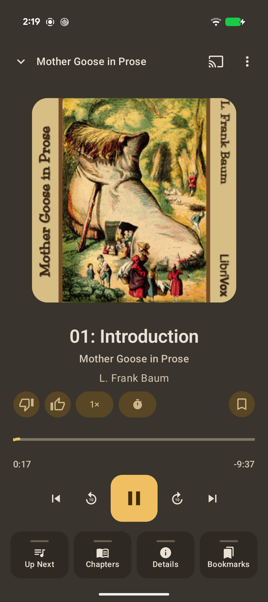
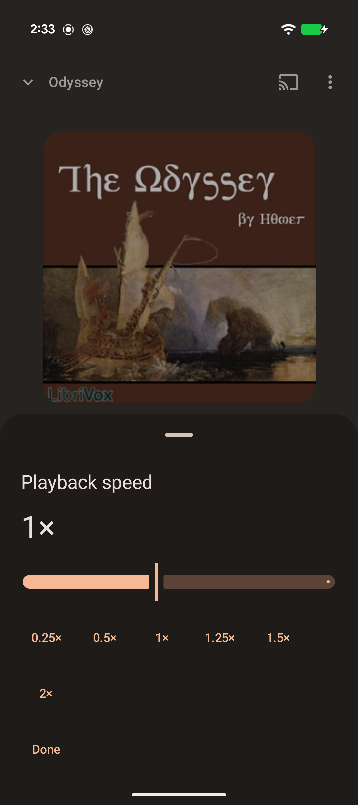
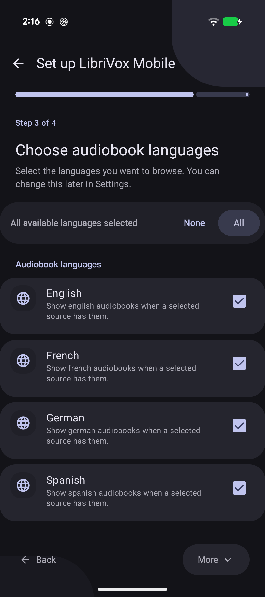
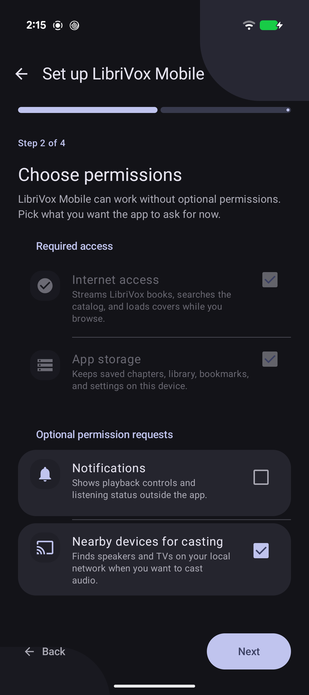

Search
Find books by title, author, chapter, or reader.
Features
Search LibriVox, stream or download books, cast audio, and keep your place.



Find books by title, author, chapter, or reader.
Save books for listening away from Wi-Fi.
Send audio to supported Cast devices.
Return to recent books, progress, and bookmarks.
Use chapters, bookmark notes, and a sleep timer without leaving the listening screen.


Find books
Open the app and start with public-domain books from LibriVox, including featured titles and recent listens.

Search
Use field filters to narrow the LibriVox catalog and keep listening from the mini-player while you browse.
Book details
Book pages show descriptions, authors, source links, save options, and chapters.

Chapters
Open a book's chapter list, move around long recordings, and return to the section you wanted.
Stream and cast
Listen on your phone, or cast audio to supported speakers, TVs, and receivers on your local network.
Pace
Adjust speed for a slow reading, a familiar book, or a narrator you want to hear a little faster.

Timer
Pick a timer before bed or whenever you want a book to stop on its own.
Bookmarks
Add bookmarks, keep notes, and return to the parts of a book you want to remember.
Offline
Save books while you have a connection, then listen later when streaming is inconvenient or unavailable.

Library
Your library keeps recent books, progress, bookmarks, likes, and downloads so you can get back to the right book quickly.

Languages
Select the languages you want to browse during setup, then change them later in settings.

Setup
The app explains required access and lets you choose optional notification and nearby-device requests during setup.

Completely free
LibriVox Mobile does not require an account and does not put audiobook features behind a paywall.